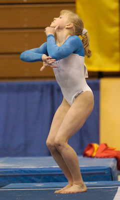

Tatiana Nabieva (RUS)
2010 World Championships Team Gold Medalist
2011 European Championships UB Silver Medalist

|
Medal Total
- World Championships: 1
Gold, 2 Silver, 1 Bronze
- European Championships: 1 Gold, 1 Silver, 1 Bronze
|
Tatiana was born on November 21, 1994 in Pushkin, Russia.
Competition Results
- 2004
- Tournament of Arques: 5th AA
- 2005
- Friendship Classic: 3rd UB
- 2006
- Siska International: 2nd AA, 1st V, 2nd UB, 4th FX, 6th B
- 2006
- Jr. Gymnix International: 1st AA
- 2008
- Jr. European Championships: 1st AA, 1st FX, 2nd V, 2nd UB, 2nd B
- 2009
- Doha Gymnasiade: 2nd AA
- Russian Championships: 3rd AA
- 2010
- European Championships: 1st Team, 3rd V, 4th UB
- Massilia Gym Cup: 1st AA
- Pas-de-Calais International: 1st AA
- World Championships: 1st Team, 7th AA, 5th V
- 2011
- European Championships: 2nd UB, 4th V
- World Championships: 2nd Team, 2nd UB
- 2013
- Pas-de-Calais International: 1st AA
- University Games: 1st Team, 2nd UB
- 2014
- Russian Championships: 7th AA
- World Championships: 3rd Team
- 2016
- Russian Championships: 8th AA
- 2018
- Dityatin Cup: 1st AA, 1st V, 1st UB
- 2019
- Russian Championships: 7th AA
- University Games: 2nd Team, 2nd UB, 3rd V
This page was created on July 19, 2021.
© Gymn Forum